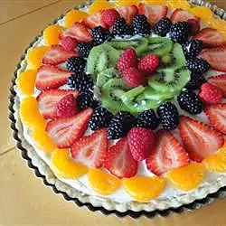

Beautiful Summer Fruit Tart

Description
This lovely tart is a favorite for summer birthday parties. The
combination of summer fruits makes this tart both beautiful and delicious!
Ingredients
Pastry:
- 3 tablespoons water
- ½ teaspoon vanilla extract
- 1 cup all-purpose flour
- 2 tablespoons all-purpose flour
- 3 1 tablespoon white sugarr
- ¼ teaspoon salt
- ¼ teaspoon salt
Cream Filling:
- 1 cup heavy cream
- ½ cup white sugar
- 1 (3 ounce) package cream cheese, softened
- 1 teaspoon vanilla extract
Fruit:
- 1 (11 ounce) can mandarin oranges, drained and patted dry
- 5 large fresh strawberries, hulled and sliced
- 1 ripe kiwi, peeled and thinly sliced
- ⅓ cup fresh blueberries
- ⅓ cup fresh raspberries
Directions
- Mix water and vanilla extract together in a small bowl.
-
Stir 1 cup plus 2 tablespoons flour, sugar, and salt together in a
medium bowl. Cut in butter until mixture forms fine crumbs. Do not
overmix, or pastry will be tough. Stir in enough vanilla water to pull
dough together. Chill for 15 minutes.
-
Roll dough out into a 12-inch circle. Gently transfer to an 11-inch tart
pan. Pat dough into place, cutting off edges and aligning pastry along
the edges of the pan. Freeze pastry shell until firm, at least 30
minutes.
- Preheat the oven to 400 degrees F (200 degrees C).
-
Bake pastry shell in the preheated oven until lightly browned, about 10
minutes. Prick any large bubbles with the tip of a knife. Allow to cool
completely.
-
Meanwhile, make the filling. Beat cream in a chilled glass or metal bowl
with an electric mixer until soft peaks form. Beat sugar, cream cheese,
and vanilla extract in a separate bowl until smooth. Fold in whipped
cream.
-
Spread filling into the cooled tart shell, smoothing out to reach the
edges. Arrange mandarin oranges, strawberries, kiwi slices, and berries
over the top, covering as much of the filling as possible. Serve
immediately or store in the refrigerator.
Back to the main page